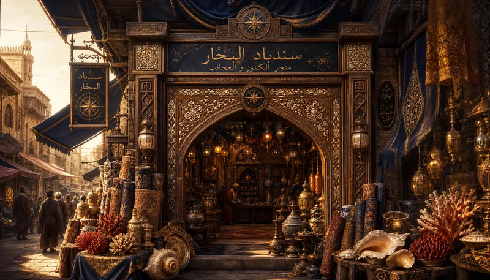
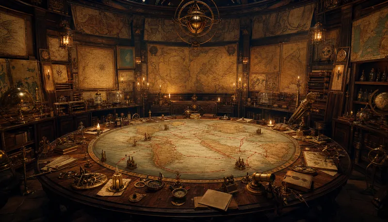
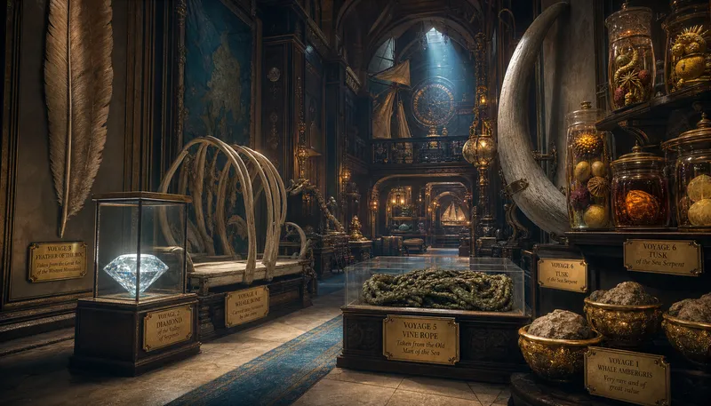
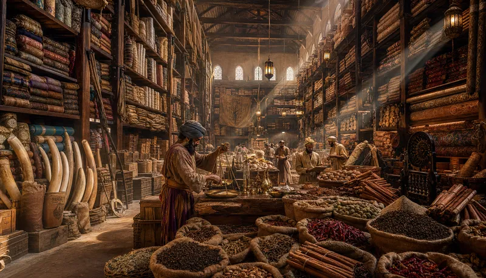
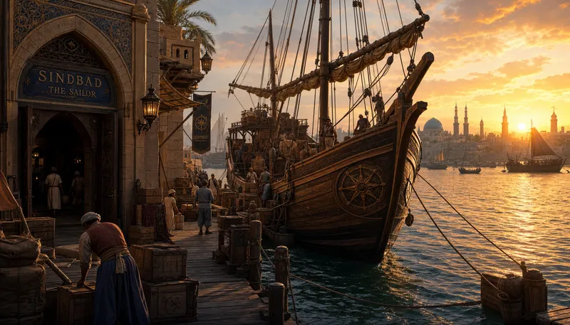
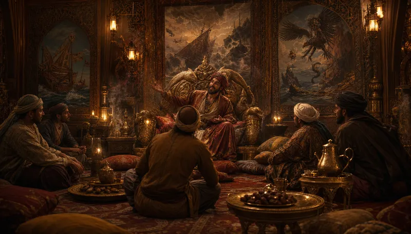

I. The Storefront
Where the Souk of Wonders begins — and the ordinary world ends

It does not look like the richest store in Baghdad. That is the point. The cedar arch is old but not grand. The mother-of-pearl inlay is chipped in places Sindbad refuses to repair — each chip is a storm survived. The goods that spill onto the street are the ordinary ones. Carpets that fly nowhere. Lamps with no djinn inside. The extraordinary things are deeper in. You have to earn the back rooms. The compass rose above the door points in five directions. The fifth is down.
"I sell what I brought back. I do not sell what I left behind. What I left behind is not for sale because it is not mine — it belongs to the sea."
II. The Map Room
Seven routes — seven nightmares — seven returns

The maps are wrong. All of them. The sea does not hold still long enough to be drawn. But Sindbad keeps them because the errors are the story. Here — where the red line veers east — that is where the whale surfaced and he mistook its back for an island. There — where the ink smudges — that is where the Roc's shadow blotted out the sun and he dropped the pen. Seven voyages. Seven red lines. Each one starts from Baghdad and returns to Baghdad. The distances between departure and return grow shorter on the map. In reality, they grow longer.
"The astrolabe tells you where you are. The compass tells you where to go. The map tells you where you have been. Only one of these is useful, and it is not the one you think."
III. The Trophy Gallery
Every wonder has a weight — Sindbad carried them all home

The Roc feather is taller than a man. It is not displayed because it is impressive. It is displayed because no one believes him without it. The diamond from the Valley of Serpents sits in a case that cost more than most houses — the diamond itself is priceless because its price killed everyone who tried to set one. The Old Man of the Sea's vine rope is under glass, still knotted the way it was around Sindbad's neck. He keeps it as a reminder. Of what? He does not say. The brass plaque on each trophy lists the voyage number. Nothing else. The stories behind them are not written. They are earned — sit down, drink tea, and Sindbad will tell you. If he feels like it.
"The feather is proof. The diamond is wealth. The rope is a scar. I keep all three because a man who forgets his scars will earn new ones."
IV. The Warehouse
Where the voyages become commerce — and commerce becomes survival

Seven voyages brought back more than stories. Chinese silk by the bolt — each one a different dynasty. Indian spices in sacks so full they lean against each other like old men. African ivory that Sindbad will not sell because the elephants were kind to him once and he remembers. Persian carpets he bought for pennies from a man who did not know what he had. Sandalwood, camphor, cinnamon, cloves, nutmeg — the warehouse smells like every port he has ever visited, simultaneously. The brass scales have not been calibrated in years. They do not need to be. Sindbad's word is the calibration.
"I weigh with my hands before I weigh with brass. The hands know what the scales pretend."
V. The Dock
The Tigris remembers every departure — and counts every return

The private dock behind the store. The current vessel — his eighth, or ninth, he has lost count of the ones the sea took — is a dhow with a compass rose carved into the figurehead. The lateen sails are furled but never stored. Sindbad does not believe in storing sails. A stored sail is a man who has decided not to leave. The crates being loaded are going to Basra, then Muscat, then wherever the wind argues. The dockworkers do not ask where. They know that Sindbad's destinations are suggestions the sea will overrule.
"The river is not the sea. The river is the promise the sea makes and does not keep. I launch from the promise. I return to it. The sea in between is God's business."
VI. The Story Room
Where Hindbad sat — and the world changed shape

The silk cushions are arranged so that everyone faces the chair. The chair is not a throne — Sindbad insists on this — it is simply the oldest chair in Baghdad that happens to be carved with sea creatures by a craftsman who had never seen the sea. The tea is always hot. The dates are always fresh. The incense is always sandalwood because sandalwood is the smell of Voyage Three and Voyage Three is the one Sindbad tells best. Hindbad the porter came in from the street, complaining about the weight of the world. Sindbad said: sit. I will tell you about weight. Seven nights. Seven stories. By the end, Hindbad was not a porter anymore. He was a man who understood that suffering is not unique — but surviving it seven times is a choice.
"I do not tell stories. I return cargo. The stories are what I carried back that had no weight and no price and no shelf. They are the most valuable goods in the store and I give them away for free. This is not generosity. This is the only way to set them down."